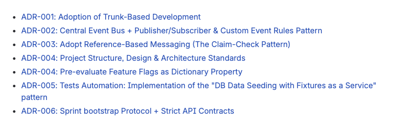

Architectural Decision Records (ADR)
An Architectural Decision Record (ADR) is a document that represent decisions made by the team and provide a history of all changes the team makes that affects the structure, quality attributes, or behavior of a system.
These DECISIONS are driven by both functional and non-functional requirements.
Framework Goals
The ADR framework establishes a culture of:
- Visibility: Decisions are not hidden in private chats or emails.
- Traceability: The "why" behind a design is preserved for future developers.
- Strategic Alignment: Ensures teams, programs, and departments move in the same direction.
Implementation and Enforcement

The team uses the ADRs as a reference during code and architectural reviews, design and implementation tasks.
ADR Contents
ADRs should follow a project-wide template to ensure consistency. At a minimum, every record must include:
- Context: What is the problem? What are the pressures or constraints?
- Decision: What is the proposed solution?
- Consequences: What are the trade-offs? What becomes easier or harder as a result?
The Review Workflow
- Proposed: The ADR is written and shared for review.
- Review Meeting: The team spends 10–15 minutes reading the ADR and flagging unclear topics.
- Discussion: The owner discusses comments with the team.
- Outcome: Accepted / Rejected / Rework